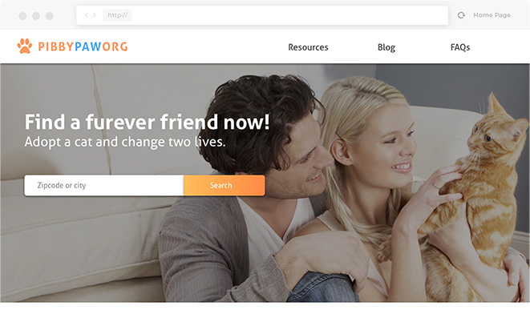
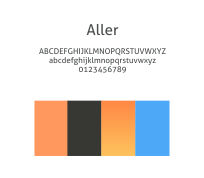
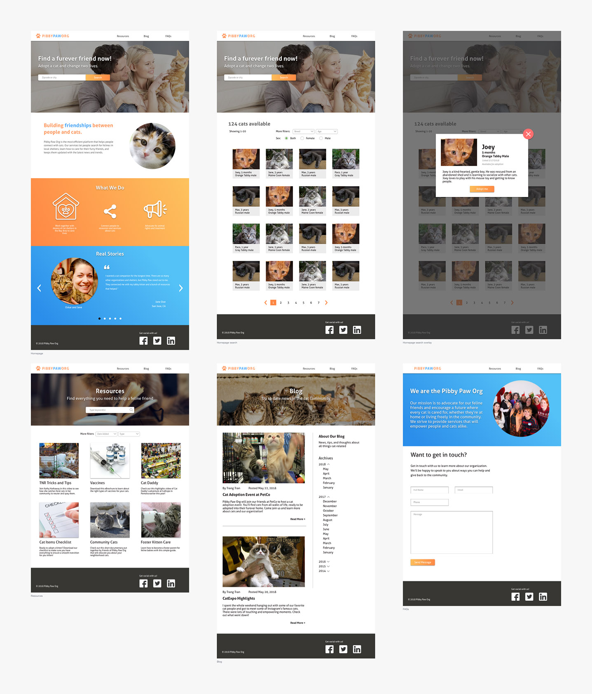

Pibby Paw Org

As one of the requirements for my UX design certificate, I had to design a website for the use of either ecommerce, booking travels, or pet adoptions. Of course being the cat-lover that I am, I went with the latter. I wanted to design a website that would let users search for cats and make arrangements to adopt them in person. Users will also be able to find resources that will help them care for their cats.
The required sections of the assignment include:
The entire project took about a month to complete and involved constant communication with my instructor to get feedback at every step of the way.
The design features several common web patterns including:
Implementing these design patterns would help the website serve its visitors by creating a familiar flow. The main users of this website include prospective adopters, so the search feature would assume a huge role.
I submitted a design comp consisting of bold and bright colors. I was inspired by my late orange tabby cat named Pibby.
 Although the concept was not translated into a working website, the processes I've demonstrated here mirror what I do for my professional work. Creating clean site maps and user flows are ways to communicate with team members and stakeholders. I explored every step of the design process and drew a lot from my academic knowledge obtained throughout the course.